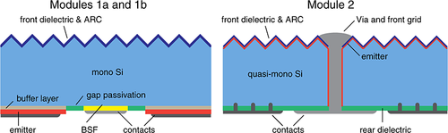
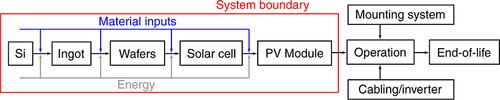
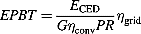
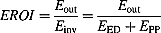
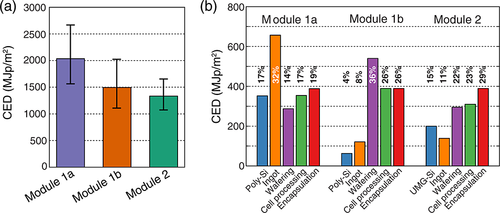
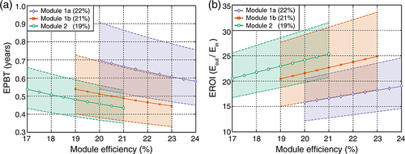
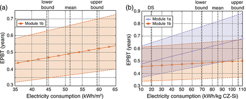
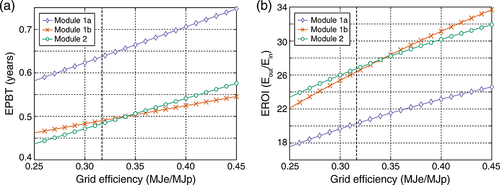

The energy payback time of advanced crystalline silicon PV modules in 2020: a prospective study
FullTextFinder@WPIABSTRACT
The photovoltaic (PV) market is experiencing vigorous growth, whereas prices are dropping rapidly. This growth has in large part been possible through public support, deserved for its promise to produce electricity at a low cost to the environment. It is therefore important to monitor and minimize environmental impacts associated with PV technologies. In this work, we forecast the environmental performance of crystalline silicon technologies in 2020, the year in which electricity from PV is anticipated to be competitive with wholesale electricity costs all across Europe. Our forecasts are based on technological scenario development and a prospective life cycle assessment with a thorough uncertainty and sensitivity analysis. We estimate that the energy payback time at an in‐plane irradiation of 1700 kWh/(m2 year) of crystalline silicon modules can be reduced to below 0.5 years by 2020, which is less than half of the current energy payback time. Copyright © 2013 John Wiley & Sons, Ltd.
1 INTRODUCTION
The photovoltaic (PV) market has experienced double digit growth in the past decade and has now reached a global capacity of approximately 67 GW 1. The year‐on‐year growth of newly installed capacity was 67% from 2010 to 2011, greatly exceeding the International Energy Agency's (IEA) annual growth rate projection of 17% for this decade from 2009 2, 3.
Average European electricity generation costs from PV modules today are 0.20 €/kWh 4, which is competitive with the retail electricity prices in some European countries. However, to fully penetrate the market, the cost of PV electricity has to be driven down further, to the wholesale electricity cost of ~0.08 €/kWh in most European countries 5. Module production costs have historically been reduced by increases in plant production capacity, increases in module efficiency, reduced cost of silicon feedstock, and reduced silicon consumption per watt‐peak (Wp) 6-8. In recent years, there have been a number of roadmapping exercises that outline paths toward low‐cost crystalline silicon modules 2, 9-15, which basically emphasize these approaches. With ongoing cost reductions of PV modules and rising wholesale electricity costs, it is expected that utility‐scale grid parity will be reached by 2014 in south Italy and by 2020 throughout Europe 4.
The fast growth of the PV markets is largely based on their promise to produce abundant electricity at a low cost to the environment. It is therefore important to monitor and report indicators of the environmental performance of PV technologies, such as the energy payback time (EPBT), the time in which an operating PV system produces the energy required to manufacture it. EPBTs are determined through life cycle assessments (LCAs) of the PV systems' cradle‐to‐grave life cycles. The most recent reported EPBT values are 1.5 and 1.3 years for monocrystalline and multicrystalline silicon PV systems, produced in Germany and located in southern Europe 16. Note that it is important to distinguish between “modules” and “systems”, as the former does not include production of the balance of system (BOS) components and installation. The European Photovoltaic Technology Platform stresses that any negative environmental impact associated with PV systems must be minimized, implying reduction of emissions, recycling of materials, and reduction of EPBTs 15. Their system EPBT target for 2020 is 0.6 years, and a long‐term target is 0.3 years 17. The IEA targets are 0.9 years for 2020 and 0.7 years for 2030 2, 17.
In this paper, we forecast the 2020 EPBTs for crystalline silicon modules. To do so, we developed three prospective module types, based on the aforementioned roadmaps. These scenarios are then modeled in a prospective LCA to calculate the EPBT and energy return on energy investment (EROI). The roadmapping exercise is discussed in Section 2, the LCA methodology in Section 3, and the uncertainty analysis in Section 4. The results are presented in Section 5 and discussed in Section 6.
2 TECHNOLOGY ROADMAPPING
In this section, we will present a short overview of technological improvements that are proposed to drive down production costs per Wp, drawing from the existing roadmapping exercises 10-13.
2.1 Feedstock and ingot growth
Today, almost all commercially available modules are made from polysilicon from the Siemens process, which is converted into crystalline ingots through either Czochralski (Cz) crystal growth (for monocrystalline silicon) or directional solidification (DS) (for multicrystalline silicon). As polysilicon accounts for almost 25% of the total module production cost today 10, some facilities try to reduce cost by process integration with material and energy recycling routes 16. Additionally, the high cost has triggered development of alternatives to the traditional Siemens route (e.g., the fluidized bed reactor process 18) and even abandonment of poly‐Si altogether, as with upgraded metallurgical grade silicon (UMG‐Si) 19. Multi‐Si cell efficiencies achieved on alternative Si feedstocks such as UMG‐Si have been demonstrated to be comparable with those of multi‐Si cells from standard feedstock in selected cases 19, 20.
Ingot sizes will increase (most notably for the DS technique), which increases the throughput and yield of good quality silicon. Another interesting development is quasi‐mono silicon, a crossover between both crystallization techniques 21. Here, the DS method is modified so that the crystal growth is seeded by a monocrystalline layer at the bottom of the melt. This produces large ingots with a central monocrystalline region, surrounded by multicrystalline edges. This approach has several benefits to regular DS ingots: as the material is quasi‐mono, the lack of grain boundaries could result in higher efficiencies. In fact, because of the lack of grain boundaries in central regions of the ingot, the segregation of impurities is more effective. This further encourages the use of UMG feedstock without compromising efficiency loss 10.
2.2 Wafering
To reduce the required amount of polysilicon, the wafer thickness is continuously reduced, from 500 µm in 1979 22 to an average of 180 µm today 13. The kerf loss, the silicon loss due to sawing, has decreased as well, to about 150 µm per wafer today. With further advances in the multiwire slurry saw (MWSS) process, it is expected that 120 µm wafers with 120 µm kerf loss are achievable by 2020 13, which already reduces silicon consumption by 27% if breakage does not increase and efficiencies can be maintained.
Aside from the kerf loss, the MWSS process has other drawbacks: wafer contamination, thickness variation across the wafer, high breakage, and high material consumption. To address those drawbacks, alternative wafering methods were proposed, most notably a wire sawing process using a fixed diamond abrasive on the wire (fixed abrasive sawing) 23. Most machines on the market today are adaptable for diamond wires, and implementing them will increase the throughput by a factor of 2–3. In addition, the kerf is commercially recyclable as opposed to kerf from the slurry‐based process 24, and wire consumption per wafer is much lower. However, the cost of the wire is much higher, and this so far stands in the way of significant market penetration, but wire costs have been decreasing by 30% per year 23.
To do away with the kerf loss altogether, kerfless cutting methods have been developed, such as the ribbon silicon 25, electrochemical cutting 26, laser wafer cutting 27, stress‐induced lift‐off 28, and light ion implantation 29. Of these methods, ribbon silicon is the oldest, but it has difficulties maintaining or increasing market share 25. Light ion implantation is commercially available, originally through Silicon Genesis (their PolyMax process 29) but more recently also through Twin Creeks (the Hyperion 30). It uses proton implantation to create a weak layer at a controlled depth in the silicon brick, after which the wafer is separated by cleaving. This process allows for wafers with a thickness between 20 and 150 µm, and even the thinner wafers have excellent mechanical strength 29. A drawback is the considerable energy required for the high‐vacuum hydrogen implantation process.
In the past, wafer sizes have also increased to reduce production costs. Larger 210 × 210 mm2 wafers are expected to be introduced in 2017, but the current 156 × 156 mm2 size will be the norm until at least 2020 13, because larger and thinner wafers will be too brittle to handle with current processing techniques. In fact, thinner wafers already put considerable constraints on cell design and processing, as, for instance, front‐to‐rear interconnection, soldering, and high‐temperature processing will result in high yield losses for currently used processes and module architectures.
2.3 Cell processing
Surface recombination becomes more important as the wafer thickness decreases, so very high quality passivation schemes are needed. Because the aluminum back surface field does not passivate well enough and the contact area has to be reduced, a transition to rear‐side dielectric passivation is required. Excellent results have recently been achieved on thermal SiO2/plasma‐enhanced chemical vapor deposition SiNx stacks 31, but thermal growth of SiO2 might be less favorable for very thin wafers. A relatively new low‐temperature approach to high‐quality passivation is atomic layer deposition of Al2O3 32, with recombination velocities as low as 2 cm/s on n‐type float‐zone wafers 33. Another effective low‐temperature approach is to use amorphous silicon (a‐Si), as in a‐Si : H/crystalline silicon heterojunction (HIT) cells 34. The HIT and effective passivation increase the open circuit voltage significantly: an efficiency of 23.7% has already been achieved on a 98‐µm‐thick wafer 35. As the patent on HIT technology has expired, it can be expected that by 2020, other manufacturers will also make use of this approach.
Because front‐to‐rear interconnection and soldering of interconnects will induce too much stress on thin wafers, the International Technology Roadmap for Photovoltaics (ITRPV) roadmap expects 35% of all cells to be rear contact by 2020 13. There are three main approaches to rear‐contact cells 36: metal wrap‐through (MWT), emitter wrap‐through (EWT), and back‐junction (BJ). In the first two approaches, the emitter is still at the front of the device, but holes are laser drilled through the wafer that transports carriers to the rear, either through the metal contacts (MWT) or the emitter (EWT). The main difference between MWT and EWT is thus that the MWT still has grid lines (but no bus bars) on the front surface. In a BJ cell, the emitter is located at the rear surface, typically in an interdigitated fashion with the back surface field (BSF). A BJ has the benefit that the contacts can cover almost the whole rear side of the cell, greatly reducing series resistance 37. All three approaches reduce contact shading, although this is especially true for the EWT and BJ types. So far, large‐area efficiencies of 24.2% have been reached on BJ solar cells 38 and over 20% on MWT cells 39. An interdigitated back contact silicon (IBC) HIT cell (IBC‐HIT) has been reported at an efficiency of 20.2% 40, but simulations show that 26% conversion efficiency is achievable 41.
Traditional screen printing is reaching its limits too. It is a “hard contact” technique, which creates yield issues on thin wafers. Furthermore, the aspect ratio of fingers is rather low, resulting in either large contact areas (which are high surface recombination areas) or small contacts with high resistance. Finally, the cost of silver in the metallization paste is becoming quite high, at 6–14 ¢ per Wp today 42. All in all, this implies a move away from silver screen printing in the coming years. A first step may be the introduction of stencil printing, providing higher aspect ratios than screen printing, but the preferred option on the somewhat longer term seems to be plating of copper contacts 42.
Reducing the wafer thickness relaxes the demands on the bulk diffusion length for efficient carrier collection but at the same time reduces the amount of light absorbed if no additional light trapping measures are taken. Random pyramidal textures are shown to perform quite well even at 50 µm wafer thickness, with demonstrated efficiencies of over 19% 43. Such thin cells with inverted pyramidal textures have even shown efficiencies of up to 21.5% 44, 45 and could be further improved with BJ schemes and better passivation. Below 40 µm, the absorption starts dropping rapidly, and for very thin wafers, dielectric 46, 47 or plasmonic resonators 3, 48 may be required for high efficiencies.
2.4 Encapsulation
The encapsulation step is responsible for most material and labor costs: it accounts for 30–40% of the total costs per Wp 9, 10. Hence, there is much to gain by cutting down on material consumption and through automation and increasing throughput.
Front‐to‐rear interconnection through stringing and soldering is responsible for a large fraction of the yield losses today, and with decreasing wafer thickness, this may get worse. As back‐contact cells require an interdigitated conductive pattern on the back sheet, these interconnection yield losses can be prevented. Späth et al . have already developed a fully automated high‐throughput module assembly line that drastically reduced cell breakage, even on 130‐µm wafers 49. Because for BJ cells most processing is on the back of the cell, it is possible to attach the wafers to a glass superstrate after processing of the front 50. This then allows for monolithic processing of the cells, which increases the yield of very thin wafers during cell processing.
Another approach is to eliminate foil lamination all together 51. Modules are sealed in double glazing at room temperature. An automated module assembly line based on this process, which also eliminates soldering, was first offered by Apollon Solar 52 and produced a module every 2 min. More recently, Bystronic Glass introduced a system that reportedly can produce a module every 45 s 53 (but with soldering). These throughputs are incredibly high compared with conventional module encapsulation processes, while material consumption is reduced and recycling becomes easier.
2.5 Technological scenarios
On the basis of the developments described in the previous subsections, we have defined three modules, as shown in Table 1 and Figure 1. Module 1a is a very high efficiency scenario based on 120‐µm‐thick 156 × 156 mm2 MWSS wafers and an IBC‐HIT design with dielectric stack passivation, random pyramidal texture on the front surface, and plated copper contacts. As shown in Table 1, high cell and module yield are assumed because of advances expected in monolithic cell processing and module assembly 13, whereas ingot and wafer yields are assumed to be the same as today. Because efficiencies of 23.7% have already been achieved on 100‐µm‐thick front contacted HIT cells 35, but results on IBC‐HIT are not quite that high yet, we estimate the efficiency to be 23.5%. Because of high packing densities and antireflection coated glass, we estimated the difference between cell and total area module efficiencies to be 1.5% absolute, down from 2.5 to 3% for today's high‐efficiency modules.
| Process step | Module 1a | Module 1b | Module 2 |
|---|---|---|---|
| Feedstock | Poly‐Si | UMG‐Si | |
| Crystallization | Czochralski ingot growth | Seeded DS | |
| Ingot yield (%) | 95 | 95 | 95 |
| Good Si out/Si in (%) | 85 | 85 | 85 |
| Wafering | MWSS | Ion implantation | MWSS |
| Wafer thickness | 120 | 40 | 120 |
| Kerf loss | 120 | 0 | 120 |
| Yield (%) | 90 | 98 | 90 |
| Cell processing | IBC‐HIT design, random pyramidal texture, plated copper contacts. | Metal wrap‐through design, random texture, front and rear passivation, plated copper contacts. | |
| Yield (%) | 99 | 99.5 | 99 |
| Efficiency (%) | 23.5 | 22.5 | 20 |
| Module assembly | Frameless encapsulation without lamination foil 51, with all‐rear low‐stress interconnection and high packing density. | ||
| Yield (%) | 99.5 | 99.5 | 99.5 |
| Efficiency (%) | 22 | 21 | 19 |
- UMG‐Si, upgraded metallurgical grade silicon; DS, directional solidification; MWSS, multiwire slurry saw; IBC‐HIT, interdigitated back contact silicon heterojunction.

Module 1b is a slight modification of 1a: Wafering is now carried out through light ion implantation, as in Silicon Genesis' PolyMax process 29. Wafers from this process are stronger mechanically, which is why we have assumed higher yields. Furthermore, the wafers are much thinner, at 40 µm, which comes at an efficiency penalty of at most 1% absolute 45.
Module 2 is a low‐cost alternative based on UMG‐Si feedstock and 156 × 156 mm2 quasi‐monocrystalline wafers. Because of the poorer quality material, we chose an MWT cell design, with random texturing on the front, front/rear passivation, and plated contacts. The efficiency for this cell is 20%, based on promising UMG‐Si and MWT results and ITRPV projections 13. Because these wafers are square, we took the efficiency loss between cell and total module at 1% absolute, even lower than in modules 1a and b.
All modules are encapsulated in a double glazing type of process, without lamination foil or curing 51. This is a high‐throughput process that is symbolic of new module assembly techniques, but as with the cell designs, there is large uncertainty on whether this is the direction the market will go. We will therefore discuss other possibilities of cell design and encapsulation in the discussion (Section 6.2).
3 PROSPECTIVE LCA
To obtain an idea of the environmental impacts of these modules, we performed a prospective LCA. LCA is a methodological tool to evaluate a product's environmental impact over its life cycle, from primary resource extraction (cradle) to disposal (grave) or recycling. For PV energy, a guideline is provided by IEA PVPS task 12 54, and a general guideline can be found in Reference 55. An LCA is typically performed in four stages: (i) scope definition, (ii) life cycle inventory analysis, (iii) impact assessment, and (iv) interpretation. We used SimaPro 7.3.2 as the software tool to perform the inventory analysis and impact assessment 56.
The functional unit is one m2 module area of the three modules introduced in the previous section, and the system boundaries are shown in Figure 2. Our prospective analysis focuses only on the cradle‐to‐gate stages of the modules, excluding the BOS and end‐of‐life stage. However, to make comparisons with system EPBT targets, we accounted for the BOS assuming static scenarios in the discussion.

3.1 Data collection, modeling, and inventory analysis
The life cycle inventory analysis is performed using the Ecoinvent database (version 2.2) (Ecoinvent Centre, St. Gallen, Switzerland) 57 for material and energy inputs. For electricity inputs, we used the continental European electricity mix, which has a conversion efficiency of 0.315. The primary energy requirement is calculated using the cumulative energy demand (CED) (v. 1.08) method 58 in units of MJp.
In the inventory, we have used as much original data as possible. As shown in Table 2, we used new data from four different companies and complemented that with data published in literature and from the Ecoinvent database. In two cases, the HIT formation step and conductive patterning of the back sheet, data were unavailable and modeling was required.
| Process step | Key inputs | Value | Source (year) |
|---|---|---|---|
| Feedstock | Poly‐Si, Siemens process (Wacker, Germany) | 545 MJp/kg | Wetzel, Feuerstein 16 (2011) |
| UMG‐Si (Elkem Solar, Norway) | 322 MJp/kg | De Wild‐Scholten, MJ 62 (2008) | |
| Crystallization | CZ‐Si electricity use | 85.6 kWh/kg Cz‐Si | Ecoinvent 63 (2007) |
| Quasi‐mono Si electricity use | 19.3 kWh/kg quasi‐mono Si | Multi‐Si from Ecoinvent 63 (2007) | |
| Other | Ecoinvent 63 (2007) | ||
| Wafering (MWSS) | Electricity (including cooling), wire, and slurry consumption | Confidential | Applied Materials 64 (2012) |
| Other | Ecoinvent 63 (2007) | ||
| Wafering (ion implantation) | Electricity requirement for total process | 51.4 kWh/m2 | SiGen 65 (2012) |
| Cell processing | Plating of contacts | Confidential | Meco 66 (2012) |
| IBC‐HIT deposition | 44.5 MJp/m2 | Modeled based on Photon International 59 (2011) | |
| Various process steps | Photon International 67 (2009) | ||
| Encapsulation | Solar glass (front 3.0 mm, rear 2.8 mm) | 14.6 kg/m2 | ITRPV 13 (2012) |
| Conductive back sheet (without glass) | 66.7 MJp/m2 | Modeled based on Ecoinvent 57 (2007) and Meco 66 (2012) | |
| Other | Apollon Solar 68 (2010) |
- UMG‐Si, upgraded metallurgical grade silicon; MWSS, multiwire slurry saw; IBC‐HIT, interdigitated back contact silicon heterojunction.
For the HIT formation, we used general data on Oerlikon's KAI‐1200 a‐Si plasma‐enhanced chemical vapor deposition chamber 59 (Table 3), which can deposit the a‐Si layer on 40 1.43 m2 modules per hour, in two batches of 20 modules. With a deposition speed of 0.3 nm/s and an a‐Si : H layer of 300 nm, it follows that the KAI‐1200 requires 800 s of loading, unloading, and starting up per batch.
| Process parameters | Value | Source |
|---|---|---|
| a‐Si deposition rate | 0.3 nm/s | Photon International 59 |
| Average power consumption | 280 kW | Photon International 59 |
| Loading or unloading | 400 s/batch | See Section 3.1 |
| Changing masks | 200 s/batch | Own estimate |
| Total process time | 1433 s/batch | Own estimate |
| Energy and material consumption | ||
| Electricity | 3.9 kWh/m2 | Own model, Photon International 59 |
| SiH4 | 0.97 g/m2 | Van der Meulen, R, and Alsema, EA 69 |
| H2 | 1.45 g/m2 | |
| O2 | 0.16 g/m2 | |
| NF3 | 0.11 g/m2 | |
We modeled a device structure as described in 18, with a 5‐nm intrinsic buffer layer under the emitter. The process flow is based on 60: the starting point is a wafer with a passivation layer, which is to be etched away in the regions where the emitter and BSF are deposited. Then, an additional mask is put in place for deposition of the intrinsic layer and emitter, after which the mask is changed for deposition of the BSF. We have assumed that each mask change requires half the time it takes to fully load or unload the chambers. Because vacuum and heater equipment are responsible for most of the power consumption, and are always on, we use the average power consumption for each process step.
The deposition and patterning of a conductive layer on the back sheet were modeled as follows: (i) vapor deposition of a thin metal layer on a glass sheet, (ii) copper plating of that thin metal layer, (iii) screen printing of an etch‐resist resin in an interdigitated pattern on the metal layer, (iv) etching, and (v) washing. The vapor deposition process data were obtained from the Ecoinvent database, whereas the other steps are taken from cell processing steps (Table 2).
3.2 Impact assessment

(1)
(2)After the impact assessment, we move on to the next, and final, stage of the LCA: interpretation. Because of the prospective nature of this study, a thorough uncertainty analysis is required.
4 UNCERTAINTY ANALYSIS
We can distinguish between various sources of uncertainty in LCA 71. First and foremost, there is parameter uncertainty: Parameters can be hard to measure precisely or precise values might be unavailable, and they might be inherently variable. Then, there is scenario uncertainty, which is related to the normative choices made in constructing scenarios. The last source is modeling uncertainty, which comes from the structure of the model.
Because of the prospective nature of this study, parameter and scenario uncertainty are most significant: Data are subject to change in the coming years, and the scenarios that we have developed may not represent the actual situation in 2020. Our approach to deal with these uncertainties is discussed as follows.
4.1 Parameter uncertainty
A prospective LCA study has two major data quality issues: data representativeness (e.g., scaling up from laboratory scale or temporal fluctuations in primary energy requirements for material inputs) and data availability (e.g., confidential or nonexistent data, which therefore have to be modeled). The challenge is to quantify these uncertainties in a transparent manner, for which the most common approach is to use a pedigree matrix approach, as in the Ecoinvent database 72. Here, the assumption is made that all inputs are accurately described by a lognormal distribution. The variance of this distribution is a measure of the uncertainty of the input and is found using a pedigree matrix with data quality indicators 72, 73. There are five data characteristics on which this variance is based: (i) data reliability, (ii) data completeness, (iii) temporal correlation, (iv) geographic correlation, and (v) further technical correlation. Each characteristic is divided into five quality levels, ranging from good to poor. On the basis of expert judgment, the indicator scores then give the variance of the input value. In Table 4, we show the pedigree matrix for the two most important characteristics in prospective studies (temporal and technological correlation).
| Indicator score | 1 (Good) | 2 | 3 | 4 | 5 (Poor) |
|---|---|---|---|---|---|
| Temporal correlation | — | — | Data from 2010 or later. | Data from 2005 or later. | Data from before 2005. |
| Further technical correlation | Data from enterprises, processes, and materials under study. | Data from processes and materials under study but different enterprises. | Data from processes and materials under study but from different technology. | Data on related processes or materials. | Data on related processes on laboratory scale or from different technology. |
A useful measure of the uncertainty of an input is the 95% confidence interval: a range in which the true value will lie with 95% certainty. The confidence interval is related to the input variance and is thus calculated on the basis of the pedigree matrix, as outlined in 72. For example, the electricity use for production of Cz‐Si comes from the Ecoinvent database. The input value of 85.6 kWh/kg is based on verified measurements (score 1 on reliability) but comes from only one site relevant for the market (score 4 on completeness). It is valid for the year 2007 (temporal score 4), comes from an area with similar production conditions (geographical score 3), and is representative for enterprises, processes, and materials under study (technological score 1). Following the procedure outlined in 72, the 95% confidence interval of the electricity requirement for a kilogram of Cz‐Si in 2020 then ranges from 69.7 to 105 kWh/kg Cz‐Si. It should be noted, however, that the electricity requirement is more likely to move toward the lower bound because of technological improvements.
Using the same procedure, we have calculated the variances of all inputs and then propagated these using Monte Carlo analysis 74 to find the 95% confidence interval of the CED, EPBT, and EROI for each module.
4.2 Scenario uncertainty
The technological scenarios and performance forecasts that we have made are subject to uncertainty too. For instance, cell and module efficiencies might be higher or lower than we predicted, so we will present the EPBT and EROI results on an efficiency interval. We have based our yield assumptions on the values reported in the ITRPV roadmap 13, which are based on expert judgment. We address the yield uncertainty through parameter uncertainty, as described in the previous subsection: industrial expert estimates receive a data quality indicator score of 4 for reliability. Together with the other indicator scores, one can find the variance and 95% confidence interval of the yield assumptions, as outlined in 72. For example, the yield during cell processing is reported to be 99% by 2020. This means that for 1 m2 of cells, 1.01 m2 of wafers is required, but the 95% confidence interval lies between 1.008 and 1.012 m2. The uncertainty on process yields is then propagated just as the other parameter uncertainties.
Finally, crystalline silicon PV modules might be produced by processes in 2020 that are unknown today or that we did not account for in our scenarios: we address these possibilities in Section 6.2.
5 RESULTS
On the basis of the life cycle inventory, we calculated the cradle‐to‐gate (factory) primary energy consumption for production of the three modules, including the 95% confidence interval, as shown in Figure 3(a) (in primary energy requirement per m2 of module). To put these values into context: the most recent LCA results for multicrystalline and monocrystalline silicon PV modules are 2150 and 2750 MJp/m2, respectively 16, so the CED of modules 1a, 1b, and 2 are only 74% (2030/2750), 55% (1500/2750), and 62% (1330/2150) of the corresponding CEDs today.

The CED of module 1a is considerably higher than that of modules 1b and 2. The breakdown in Figure 3(b) shows that this is almost solely due to the relatively high consumption of monocrystalline silicon. Moving toward a kerfless cutting method drastically reduces silicon consumption, by a factor of five, but at the same time, the wafering energy is increased because of the energy intensive ion implantation process. Modules 1a and 2 require the same amount of feedstock, but the UMG‐Si feedstock and seeded DS reduce the primary energy requirement for this step by almost a factor of three (although this comes at an efficiency penalty). Because we only investigated a double glazing‐like encapsulation process, all modules have the same encapsulation energy.
The breakdown for the aforementioned recent LCA results on monocrystalline silicon modules into poly‐Si,ingot growth and wafering, cell processing, and encapsulation is approximately 500, 1260, 390, and 600 MJp/m2 (or 18%, 46%, 14%, and 22%), respectively 16. Comparing this with the breakdown shown in Figure 3(b), we see that in module 1a, modest reductions have been achieved in feedstock, crystallization and wafering (owing to thinner wafers), and encapsulation. The cell processing energy requirement has not changed much, most likely because low‐temperature processing has offset increases due to the increased overall process complexity. As mentioned before, poly‐Si consumption is drastically reduced in module 1b, and module 2 uses low‐energy feedstock. Because module 2 is based on quasi‐mono wafers, the energy requirement here is reduced further (the corresponding energy requirement for ingot growth and wafering in 2011 in a multi‐Si module was ~670 MJp/m2 16).
The confidence intervals are quite large: [1560, 2660], [1110, 2010], and [1060, 1650] MJp/m2 for modules 1a, 1b, and 2 respectively (Figure 2(a)). This is mainly due to the temporal uncertainty: About half (or even 63% for module 1a) of the primary energy requirement comes from poly‐Si feedstock, ingot growth, and wafering, and these production steps have a large potential for reduction in energy intensity by scaling up. We therefore expect the actual CED to decrease toward the lower bound rather than increase.
We also calculated the EPBTs for these modules (Figure 4(a)). The mean payback time of module 1a is just over 0.6 years, whereas 1b and 2 have an EPBT just below than 0.5 years. As is common today, there is a gap between multi‐Si and mono‐Si for traditional wafers, but by using thin, kerfless cut wafers, this gap closes. The most recent module EPBT values are 1.3 for mono‐Si and 1.1 for multi‐Si 16, so a reduction in the EPBT of over a factor two is feasible by 2020—or even more if we take into account the potential to move toward the lower bound of the confidence interval. Aside from the reduction in CED of the three modules, the considerable increase in module efficiency is an important factor in the EPBT reductions.

In Figure 4(b), we show the EROI of produced electricity for a lifetime of 35 years 15. It is by using the same data as for the comparison of CED 16, but with a lifetime of 30 years, that the EROI for multi‐Si and mono‐Si PV modules from 2011 is 8.8 and 7.5, respectively, so the EROI of crystalline silicon PV modules will increase dramatically in the coming years.
6 DISCUSSION
As we mentioned before, prospective LCA studies are subject to parameter and scenario uncertainties. We will discuss those uncertainties in the next two subsections and then conclude this section with a brief discussion of the BOS components.
6.1 Parameter sensitivity
In addition to the uncertainty analysis that we included in our results, it is important to check if our results are overly sensitive for certain input parameters. As we mentioned in Section 3.2, the PR is one of these parameters: currently taken at 0.75, it might well be underestimated significantly and values of 0.9 are feasible 75. If the PR were to increase to 0.80, 0.85, or 0.90, this would further reduce the EPBT of the modules by 6%, 12%, or 17%, respectively. With a PR of 90%, the lowest EPBT would be 0.4 years (for module 2).
To check for sensitive inputs in the LCI, we calculated how much the module's CED would change if the input value were to move to the upper bound of the 95% confidence interval. The top three inputs to which the results are most sensitive are shown in Table 5. For example, with 7%, the electricity requirement for Cz ingot growth is the most sensitive input for module 1a. This means that if the electricity requirement were to increase to the upper bound of the input's 95% confidence interval by 2020, the total CED of module 1a would increase by 7%. In other words, regarding the Cz electricity requirement, we are 95% sure that module 1a's CED lies within an interval of approximately ±7%.
| Module 1a | Module 1b | Module 2 | |
|---|---|---|---|
| 1 | Cz electricity requirement (7%) | Wafering electricity demand (6%) | Solar glass (4%) |
| 2 | Poly‐Si feedstock (5%) | Solar glass (3%) | UMG‐Si feedstock (4%) |
| 3 | Solar glass (3%) | ARC deposition (3%) | DS electricity requirement (3%) |
- CED, cumulative energy demand; UMG‐Si, upgraded metallurgical grade silicon; DS, directional solidification; ARC, antireflection coating.
In this section, we will explicitly deal with the kerfless cutting energy and the Cz crystal growth electricity consumption. Note that the process steps that we modeled have high uncertainty but account for only a small share of the total primary energy demand, and therefore, the final CED can be considered insensitive to these inputs.
Although we have first‐hand data from Silicon Genesis on the energy requirement for ion implantation wafering, it is a new technology. Pilot production is running since 2009 but not yet at full capacity 29, and the energy requirement per wafer might therefore be subject to considerable change in the future. In Figure 5(a), we show the 95% confidence interval of the ion implantation wafering electricity requirement for 50 µm wafers, but variation over this interval only results in a 5% decrease at the lower bound or a 6% increase at the upper bound of the CED and EPBT. The energy intensity usually decreases as a technology matures, so we expect that changes will be for the better.

Module 1a is particularly sensitive to the electricity requirement for Cz crystal growth: the input share is large (almost 30%), the data are old (published in 2007), and the data already had a relatively high uncertainty to start with. Over the confidence interval for Cz‐Si electricity consumption, the CED and EPBT of module 1a range from 94% on the lower bound to 107% on the upper bound compared with the mean. Figure 5(b) shows the impact of the electricity requirement per kilogram Cz‐Si on the EPBT of modules 1a and 1b. It is quite clear that the impact on module 1b is modest, because the input share for that module is just 7%. The dashed line on the left in Figure 4(b) shows the electricity requirement per kilogram Si for DS, which is lower than 20 kWh/kg. We show this because it is representative for quasi‐mono feedstock, which according to the ITRPV will have a market share of almost 50% in 2020 13. If quasi‐mono ingots can replace Cz ingots, this will result in a substantial reduction in the EPBT of module 1a: over 22%. Even if the use of quasi‐mono ingots comes at an efficiency penalty, the reduction in electricity requirement will be beneficial. It must be noted, however, that BJ solar cells require very high carrier lifetimes, and at this point, it is uncertain whether such demands can be met on quasi‐mono wafers. This is why, in the ITRPV roadmap, quasi‐mono is projected to replace multi‐Si wafers (and hence is used in module 2), whereas the mono‐Si share remains practically constant.
To conclude, the primary energy requirement for the production of electricity is a very sensitive parameter, as other authors have pointed out 61, 76. In this study, we used the average continental European grid electricity mix, which has an efficiency of 31.5%. However, the grid efficiency varies between countries and changes over time. For example, if PV reaches a 20% penetration of the grid, the grid efficiency will increase to roughly 41% 61. As Figure 6(a) shows, this increases the EPBT because less primary energy consumption is prevented by displacing grid mix electricity with electricity from a PV module. On the other hand, it also reduces the primary energy requirement for module production, which causes the EROI to increase, as shown in Figure 6(b). For these figures, we have assumed that the poly‐Si feedstock is not produced with grid electricity but with on‐site power generation, and hence that share of the CED is not affected by a change in grid efficiency. In reality, poly‐Si is often produced using power from a mix of gas and steam turbines, hydro, and the grid. It is noted that if poly‐Si production in the future increasingly uses coal‐based electricity, EPBTs and emissions will worsen.

6.2 Scenario uncertainty
Sources of scenario uncertainty include diamond wire sawing, encapsulation methods, double‐sided contact cells, and passivation methods. Starting from the latter, Al2O3 is a promising candidate for high‐quality passivation, but lacking data, we used data for SiNx passivation. Even though SiNx passivation does not reduce the surface recombination velocities enough for high efficiencies, the energy this deposition process requires will be similar to (or higher than) Al2O3 deposition, and any difference will not significantly influence the final results because the input share is low.
Although we only investigated rear‐contact modules, the ITRPV expects 65% of the market share to still be double‐sided contact modules in 2020 13. This will primarily result in lower packing densities, as efficiencies of 23.7% have already been shown on double‐sided HIT cells and module 2 already has a contact grid on the front, so the efficiency penalty from the additional bus bars is small.
There are two sources of scenario uncertainty that we believe could significantly impact the outcome. The first is fixed abrasive sawing with diamond‐particle‐coated wires. According to the ITRPV, by 2020, 100% of mono‐Si and 80% of multi‐Si wafers will be sawn with diamond‐coated wires, thus almost completely replacing slurry‐based wire sawing 13. Using diamond‐particle‐coated wires results in higher throughput, lower sawing energy consumption, kerf width reduction, kerf recycling, and lower wire consumption. With data from NorSun 77 and Garbo 78, we have calculated that this results in a 29% reduction in the primary energy requirement per 120‐µm‐thick monocrystalline wafer or to an EPBT of 0.5 years for module 1a. Unfortunately, no diamond‐wire producer was willing to share data with us because of their highly competitive business environment, so we could not include a diamond‐wire cutting scenario in our study.
The second source of significant scenario uncertainty is the encapsulation method. We used a high‐throughput encapsulation process that does not require foil lamination, but it may very well be that, for instance, an interdigitated interconnection scheme can only successfully be integrated on foil. From 16, we calculated that the additional primary energy requirement for the conventional encapsulation method with only one glass sheet, but with EVA, Tedlar, and curing is about 190 MJp/m2. This would increase the EPBT of modules 1a, 1b, and 2 by 9%, 13%, and 15%, respectively.
6.3 Balance of system
Although the BOS lies outside of the scope of this investigation, it is a crucial part of any PV energy system, and we will therefore briefly discuss its impacts on our results. One can distinguish between two common types of grid‐connected PV systems: building‐integrated systems (e.g., rooftop panels) and ground‐based systems (e.g., large‐scale centralized power plants). In Table 6, we show the EPBT and EROI for both types of system, calculated with data from 79. The rooftop system consists of a 2.5‐kW inverter and a Schletter mounting system. The PV plant uses average mounting structure data from market surveys and inverter data based on a 4.6‐MWp plant in Tucson, USA. For the large‐scale PV plant, a PR of 0.80 is used 56. An extensive discussion of the EROI of PV systems in relation to other sources of electricity is given in 70.
| Rooftop | Grount‐mount PV plant | |||||
|---|---|---|---|---|---|---|
| Module | 1a | 1b | 2 | 1a | 1b | 2 |
| Structure, cabling (MJ/m2) | 225 | 225 | 225 | 645 | 645 | 645 |
| Inverter (MJ/m2) | 704 | 675 | 614 | 254 | 243 | 222 |
| Total (MJ/m2) | 929 | 900 | 839 | 899 | 888 | 867 |
| EPBT (years) | 0.9 | 0.7 | 0.7 | 0.8 | 0.7 | 0.7 |
| EROI (E out/E in) | 13 | 15 | 15 | 14 | 16 | 16 |
- BOS, balance of system; PV, photovoltaic; EPBT , energy payback time; EROI , energy return on energy investment.
- Data comes from 78.
To reduce costs associated with the BOS, the EUPVTP has identified some research priorities 15. For the EPBT, the most relevant goals are an increase in the inverter lifetime (of over 30 years by 2025 compared with 15 years now) and low‐cost support structures, cabling and electrical connections. As Table 6 shows, the inverter accounts for a considerable share of the CED of rooftop systems, and even a modest increase in the inverter lifetime would therefore significantly decrease the system EPBT. The inverter is less important in the case of large‐scale PV plants, where the support structure dominates the CED.
7 CONCLUSION
In this work, we presented a prospective life cycle analysis of crystalline silicon PV technologies in the year 2020. To do so, we developed three technological scenarios (two based on monocrystalline silicon and one based on quasi‐monocrystalline silicon), building on various existing roadmaps. To summarize, increasing the cell efficiency is (after scaling up) the most important lever to reduce energy demand and costs. By using high‐quality passivation and BJs, higher efficiencies can be achieved while simultaneously reducing the wafer thickness, which reduces the embodied energy even further. However, thinner wafers also require novel cell processing and encapsulation schemes, which we accounted for. We forecast that the EPBT of crystalline silicon modules can be reduced to 0.5 years or less (below 0.7 years when including BOS). This confirms that the European Photovoltaic Technology Platform's target of 0.6 years at the system level may be too ambitious, but the IEA target of 0.9 year will be met. The EROI of PV modules is expected to increase further by a factor two to three in the coming years.
This is a prospective LCA, subject to technological improvements taking place, and as such, it carries a considerable degree of uncertainty. To address parameter uncertainty, we present results with a 95% confidence interval, but scenario uncertainty remains: crystalline silicon modules in 2020 may be based on technologies or production methods that we did not include in our scenarios, such as diamond‐particle‐coated wire sawing for wafering. Because the general tendency of maturing technologies is to become less energy and material intensive and we have used data that are representative of, at best, the situation today, our forecasts can be considered conservative.
Finally, it is important to note that these results cannot easily be compared with other PV technologies, because they too can change over time. Nonetheless, these results show that there is considerable potential to reduce the environmental impact of crystalline silicon PVs while reducing production costs.
ACKNOWLEDGEMENTS
We would like to thank Dr. Philippe Nasch of Applied Materials, Martijn Zwegers of Meco, Ted Fong of Silicon Genesis, Étienne Saint‐Sernin, formerly of Apollon Solar, Dr. Ilaria Lombardi of Garbo, and Dr. Øyvind Nielsen of NorSun for supplying data and helpful discussion. Furthermore, we would like to thank Dr. Carol Olson, Dr. Noorie Rajvanshi, Dr. Hyung Chul Kim, Dr. Evert Nieuwlaar, and Dr. Doug Rose for insightful comments and Dr. Martin Patel for assistance with SimaPro.